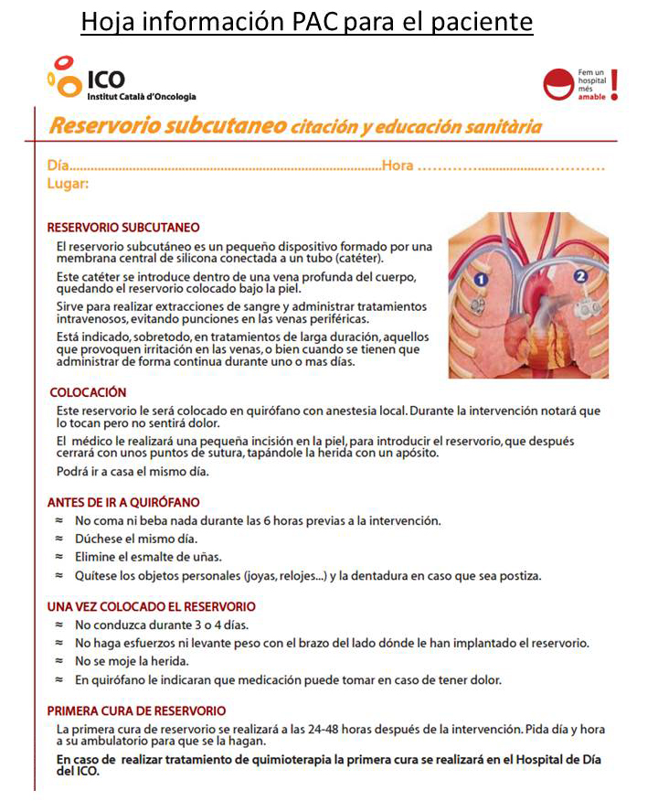
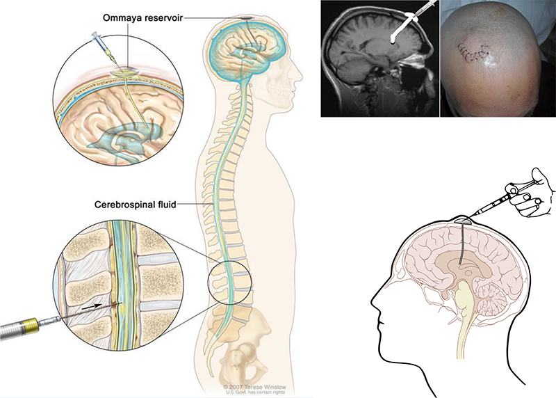

ICO 24h
MÓDULO 2 : Hospital de Día Oncológico
c Port-a-cath Catéter central interno de larga duración (indicado hasta 5 años). Consta de: Portal o cámara subcutánea (titanio, acero inoxidable o poliuretano). Pueden ser de alto flujo y admiten contrastes. Se colocan en el quirófano y requieren un mantenimiento periódico. A los pacientes se les entrega una hoja de información sanitaria donde se explican sus cuidados.
d Reservorio Ommaya: es un pequeño dispositivo que se coloca en el tejido subcutáneo del cuero cabelludo del cual sale un catéter que se inserta en el ventrículo lateral. Permite la administración de quimioterapia intratecal. Se indica en los pacientes con carcinomatosis meníngea (cáncer de pulmón y mama básicamente).
e Catéteres intraperitoneales: consiste en un puerto subcutáneo implantado en abdomen cuyo extremo drena en peritoneo y permite la administración intraperitoneal de quimioterapia. Utilizado en las pacientes con cáncer de ovario y carcinomatosis peritoneal.